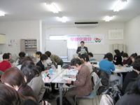

| １． |
生協ネットワーク協議会会長より歓迎のあいさつ後、ＪＡ女性協会長よりあいさつをいただきました。 |
| ２． |
ミニ学習会「レジ袋削減の取り組み」 |
| |

- 最初に中国産餃子の中毒事件について経過等説明 がありました。
- さいたまコープの「容器包装リサイクル法改正」とレジ袋の考え方。
- 狭山市２店舗での有料化実験までの経過と進行状況について。
|
| ３． |
店舗見学
２グループに分かれ、普段あまり目にすることが無い店舗のバックヤードの見学をしました。 |
| ４． |
５つのグループに分かれて交流(○は主な意見・質問) |
| |
○ |
ＪＡ女性協でも環境について学習をしたかったので良いきっかけになりました。３Ｒ(リデュース、リユース、リサイクル)でごみという言葉を初めて知り、良い勉強になりました。 |
| |
○ |
マイバッグ持参を習慣とするように努力したい。 |
| |
○ |
ＪＡでは国産100%の食材の供給を組合員さん向けに取り組んでいます。 |